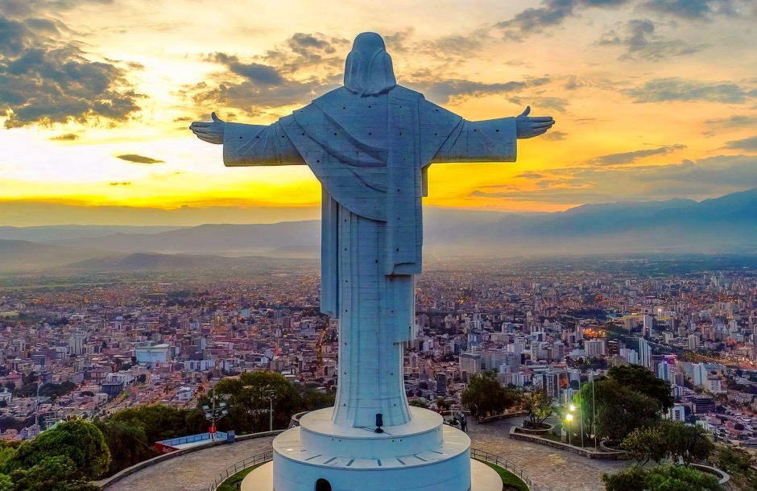
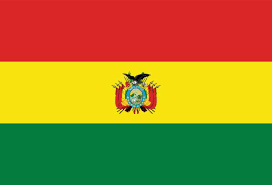

La Ciudad de Bolivia, UMSA, La Paz



¿Donde, Cuando nació?
Bolivia nació el 6 de agosto de 1825, tras la independencia del dominio español en Sudamérica. El territorio, previamente conocido como Alto Perú, decidió formar un nuevo estado independiente inspirado en las ideas de Simón Bolívar, quien fue homenajeado al darle su nombre a la nación. El movimiento independentista comenzó en 1809 con levantamientos en Chuquisaca y La Paz, pero fue parte de un proceso más amplio en la región. Tras varias batallas y alianzas con fuerzas independentistas, la victoria en la batalla de Ayacucho (1824) consolidó la independencia del país.
Bolivia nació el 6 de agosto de 1825, tras la independencia del dominio español en Sudamérica. El territorio, previamente conocido como Alto Perú, decidió formar un nuevo estado independiente inspirado en las ideas de Simón Bolívar, quien fue homenajeado al darle su nombre a la nación. El movimiento independentista comenzó en 1809 con levantamientos en Chuquisaca y La Paz, pero fue parte de un proceso más amplio en la región. Tras varias batallas y alianzas con fuerzas independentistas, la victoria en la batalla de Ayacucho (1824) consolidó la independencia del país.
El crecimiento de Bolivia desde su independencia en 1825 ha estado marcado por varios desafíos y avances importantes en su desarrollo político, económico y social:
1. Siglo XIX: Tras su independencia, Bolivia enfrentó guerras con sus vecinos, como la Guerra del Pacífico (1879-1884) con Chile, que resultó en la pérdida de su acceso al mar. Su economía, dependiente de la minería de plata y, luego, de estaño, fluctuó a lo largo del siglo.
2. Principios del Siglo XX: El auge del estaño benefició al país, pero las desigualdades sociales y la dependencia de un pequeño grupo de élites mantuvieron la pobreza en amplios sectores de la población. La Guerra del Chaco (1932-1935) con Paraguay debilitó al país, generando descontento social.
3. Revolución Nacional (1952): Este fue un punto de inflexión, con reformas profundas como la nacionalización de las minas de estaño, la reforma agraria y la extensión del voto a la población indígena, lo que democratizó en parte la sociedad boliviana.
4. Dictaduras y transición a la democracia (1964-1982): El país vivió una serie de golpes militares y dictaduras, hasta que en 1982 se restableció la democracia, aunque con una economía en crisis, marcada por la hiperinflación.
5. Neoliberalismo y estabilidad: En los años 90, Bolivia adoptó reformas neoliberales que privatizaron sectores estratégicos. Aunque trajeron estabilidad económica, aumentaron las tensiones sociales.
6. Gobiernos de Evo Morales (2006-2019): Morales, el primer presidente indígena de Bolivia, implementó políticas de nacionalización de recursos y redistribución de la riqueza, reduciendo significativamente la pobreza y aumentando la inclusión de los pueblos indígenas.
7. Crisis y actualidad: En 2019, Bolivia vivió una crisis política tras las elecciones, lo que llevó a la renuncia de Morales. Tras un gobierno interino, en 2020 Luis Arce, del mismo partido que Morales (MAS), ganó las elecciones, retomando las políticas sociales y económicas orientadas al crecimiento, aunque el país aún enfrenta desafíos como la pobreza y la dependencia de los recursos naturales.
1. Siglo XIX: Tras su independencia, Bolivia enfrentó guerras con sus vecinos, como la Guerra del Pacífico (1879-1884) con Chile, que resultó en la pérdida de su acceso al mar. Su economía, dependiente de la minería de plata y, luego, de estaño, fluctuó a lo largo del siglo.
2. Principios del Siglo XX: El auge del estaño benefició al país, pero las desigualdades sociales y la dependencia de un pequeño grupo de élites mantuvieron la pobreza en amplios sectores de la población. La Guerra del Chaco (1932-1935) con Paraguay debilitó al país, generando descontento social.
3. Revolución Nacional (1952): Este fue un punto de inflexión, con reformas profundas como la nacionalización de las minas de estaño, la reforma agraria y la extensión del voto a la población indígena, lo que democratizó en parte la sociedad boliviana.
4. Dictaduras y transición a la democracia (1964-1982): El país vivió una serie de golpes militares y dictaduras, hasta que en 1982 se restableció la democracia, aunque con una economía en crisis, marcada por la hiperinflación.
5. Neoliberalismo y estabilidad: En los años 90, Bolivia adoptó reformas neoliberales que privatizaron sectores estratégicos. Aunque trajeron estabilidad económica, aumentaron las tensiones sociales.
6. Gobiernos de Evo Morales (2006-2019): Morales, el primer presidente indígena de Bolivia, implementó políticas de nacionalización de recursos y redistribución de la riqueza, reduciendo significativamente la pobreza y aumentando la inclusión de los pueblos indígenas.
7. Crisis y actualidad: En 2019, Bolivia vivió una crisis política tras las elecciones, lo que llevó a la renuncia de Morales. Tras un gobierno interino, en 2020 Luis Arce, del mismo partido que Morales (MAS), ganó las elecciones, retomando las políticas sociales y económicas orientadas al crecimiento, aunque el país aún enfrenta desafíos como la pobreza y la dependencia de los recursos naturales.
Hoy, Bolivia sigue buscando diversificar su economía, fortalecer su democracia y resolver conflictos sociales y políticos internos.

Bolivia
Bolivia es un país del centro de Sudamérica, con un terreno variado desde los Andes, el Desierto de Atacama y el bosque pluvial en la cuenca del Amazonas.
A continuación el Himno nacional